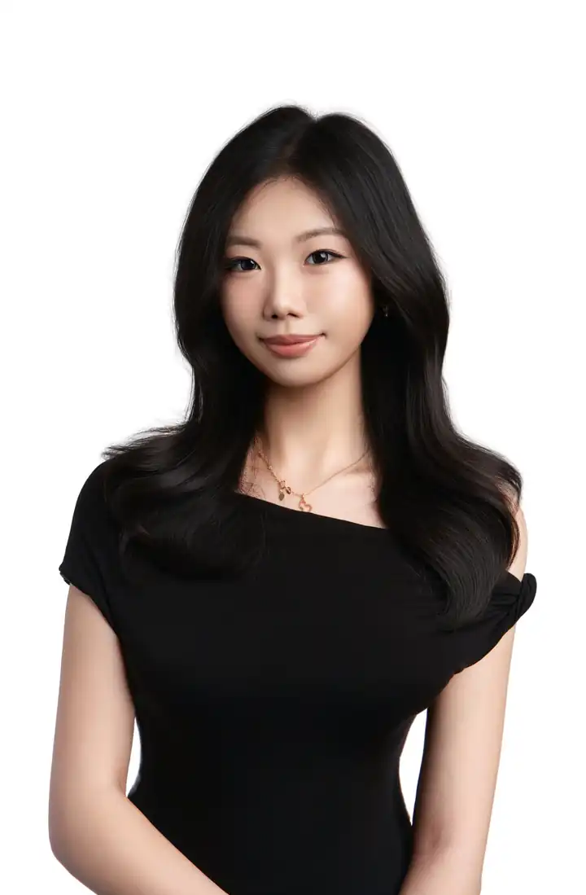
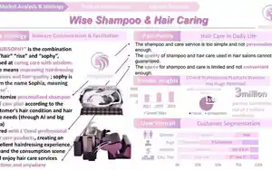
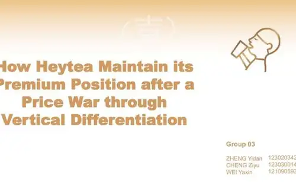
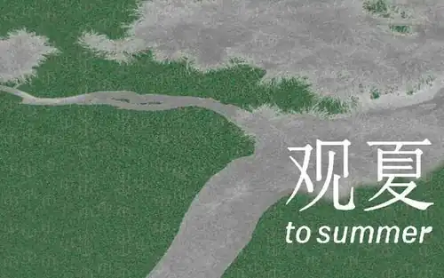
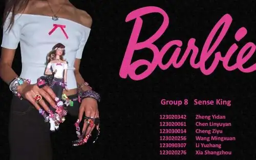
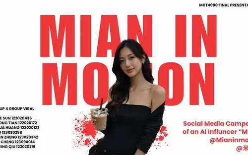
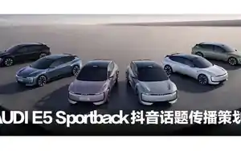

香港中文大学（深圳） · 市场营销 本科
专业 GPA 3.74/4.0，专业排名第六。核心课程包括整合营销、数字营销、品牌策略、运营管理、财务管理、统计学等。
励耘奖学金学勤书院优秀文化传播奖
Marketing · Brand Strategy · Platform Growth
香港中文大学（深圳）市场营销本科生，关注整合营销、品牌策略、数字营销与平台内容增长。经历覆盖电商运营、整合传播、消费者洞察、品牌定位、AI 虚拟达人内容策略与校园组织管理。

专业 GPA 排名第六
L'Oréal Brandstorm 2024
JD 单月增长项目
中文 / English 双语表达
Education
专业 GPA 3.74/4.0，专业排名第六。核心课程包括整合营销、数字营销、品牌策略、运营管理、财务管理、统计学等。
核心课程包括 PR & Communication、AI Business、可持续发展，补充国际商业语境下的传播、技术与责任议题视角。
Internship
独立负责促销平台单品秒杀运营，通过精准定价、流量分配与爆品组合推动组内单月 GMV 同比增长 370%。参与 618 大促期刊品类运营，联动内容、直播与视觉优化；推进抖音、小红书、公众号及 KOL/KOC 合作，实现图书品类单场成交第一；参与选品、采购、库存管理及出版社对接。
参与抖音签约创作者及品牌项目社媒传播方案，覆盖抖音、微博、B站、小红书，协助达人分层、内容分工及站外回流路径设计。参与奥迪 E5 抖音话题营销及懂车帝汽车达人嘉年华方案，支持客户需求拆解、内容体系搭建及多阶段传播节奏规划，并参与华为产品公关稿、联想财经新闻稿撰写优化。
Projects

针对专业洗护中“护理方案标准化、产品质量不透明、护理场景受限”等痛点，设计 AI 发质检测 + 个性化护理的 O+O 智能洗护方案，团队入围全球 Top 20。

围绕新茶饮进入存量竞争后的需求变化，提出以产品升级与品牌表达重建差异化的策略方向。

聚焦 55+ 银发香氛市场，提出“高品质、适老友好、东方美学香氛”定位及延展方案。

围绕“多元美”重构品牌定位，并设计产品系列与整合传播方案。

完成 AI 虚拟达人的人设、内容方向与品牌应用场景设计；围绕平台机制与目标受众，设计内容矩阵、多平台曝光与互动增长路径。

围绕品牌年轻化目标，设计内容切口、达人分层与传播节奏。
Campus & Research
主导校级重点项目“燃梦计划”策划与统筹，项目预算约 10 万元；代表学校参加广东省青年马克思主义者培养工程，为校内唯一代表，并获优秀学生干部奖。
参与策划执行欧家主题分享活动，围绕品牌项目与求职经历输出经验，现场覆盖约 300 人；负责公众号推文与小红书内容产出，小红书内容浏览量达 3,000。
负责合作对接与资源协调，支持校级音乐活动筹备与执行，活动覆盖约 800 人。
执行大规模图像数据抓取与处理任务，基于课题组代码框架完成数据采集流程，负责环境配置、报错排查、输出规范化整理与结构化归档。
Contact